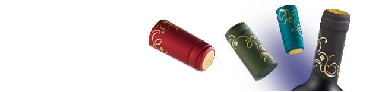
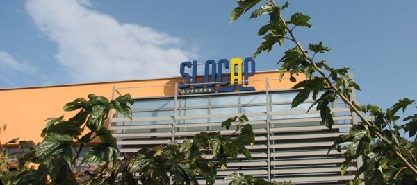
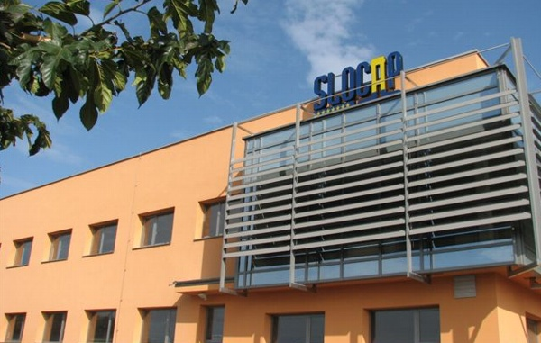
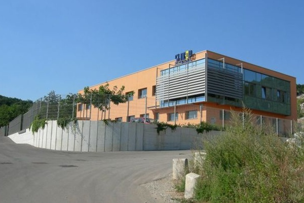
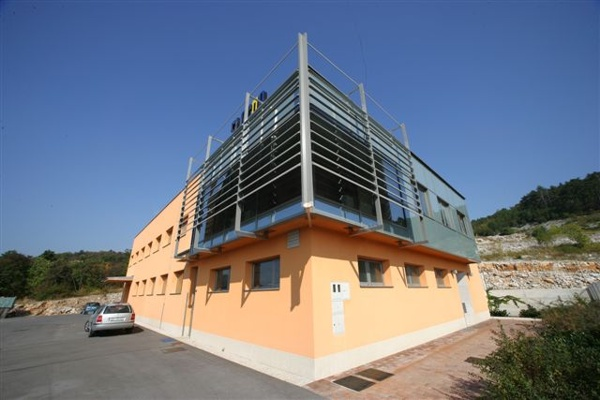
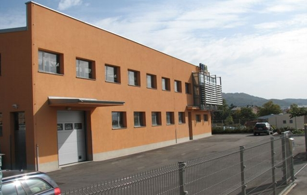
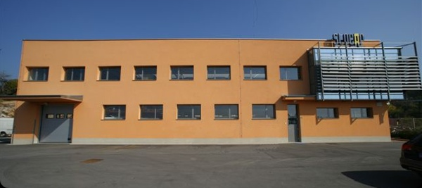

|  | |
|
Dobrodošli!
Prišli ste na našo spletno stran, kjer si lahko poiščete marsikaj v zvezi z našim podjetjem. Na strani s proizvodi lahko preverite, kaj vse vam nudimo. Na strani o podjetju je predstavljena kratka zgodovina našega podjetja in od kje prihajamo. Na zemljevidu si lahko ogledate, kje točno se nahajamo, lahko pa si tudi poiščete pot do nas preko našega interaktivnega zemljevida. Želimo vam čim bolj prijetno brskanje po naših straneh in dobro poslovno sodelovanje v prihodnosti.

Začetek podjetja Slocap d.o.o. sega v leto 1992, kjer je na začetni lokaciji v Sežani pričelo z izdelavo PVC kapic. Iz leta v leto se je podjetje razvijalo, širilo svojo proizvodnjo in trg. Leta 2007 se je podjetje Slocap preselilo v nove proizvodne prostore na novi lokaciji v Sežani. Pri tem je tudi svojo ponudbo razširilo na izdelavo polilaminatnih kapsulonov za steklenice penin, aluminijastih in pvc pokrovčkov za inox in steklene sodčke. Glavna načela podjetja so vedno bila zagotavljanje kvalitete lastnega proizvoda, prilagodljivosti do končnega porabnika - kupca, minimalni dobavni roki, možna izdelava manjših količin in svetovanje kupcem pri naročanju proizvodov. Za zagotavljanje visoke kvalitete svojih proizvodov podjetje uporablja samo materiale priznanih svetovnih proizvajalcev. Kupce proizvodov Slocap najdemo po vsej Evropi in po državah bivše Jugoslavije.

  
Kapice PVC
Tip: Standard (1) in ravna glava (2) dimenzije premera d : 25mm - 36mm, dolžine h : 30mm - 70 mm brez odvijalnega trakca, z vertikalnim odvijalnim trakcem s horizontalnim odvijalnim trakcem perforacija Barve: telo v dveh barvah + 1 x topli tisk Barve pokrovčka: v dveh barvah + relief - logo
Kapice polilaminat za steklenice penin
Material: polilaminat 62 um (ostale debeline po naročilu) Dimenzije: glava 34mm dolžine 75mm- 140mm Konus: 1/7, 1/8 brez odvijalnega trakca z odvijalnim trakcem z odvijalnim trakcem in 1 x perforacija pod trakcem dvojna perforacija brez trakca okenca relief rombi v materialu, podaljšana okrogla ovratnica na eni strani. Barve telesa: v dveh barvah + 2 x topli tisk Barva pokrovčka: v dveh barvah + 1 x topli tisk
Kapice Aluminij za sodčke
Material: aluminij Dimenzije: premera 45, 60, 63, 78mm Barve: v eni barvi + tisk Material: PVC Dimenzije: 63mm Barve: v eni barvi

Slocap d.o.o. Sežana
Cesta na Lenivec 30 D 6210 Sežana, Slovenija Tel.: +386(0)5 730 48 90 Fax.: +386(0)5 730 48 91 E-mail: info@slocap.si |
|
Slocap d.o.o. Sežana. Proizvajalec PVC kapic, Kapice polilaminat za steklenice penin, Kapice Aluminij za sodčke